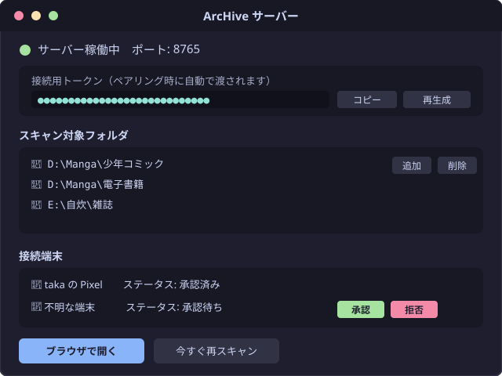
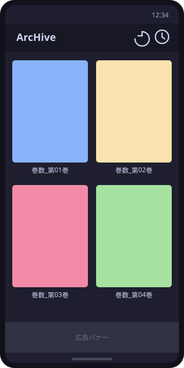
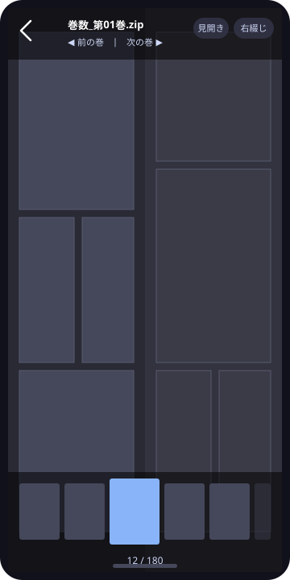

PCサーバーのインストールからスマホアプリのペアリング、リーダーの操作方法までをまとめました。
下のスクリーンショットはイメージ（モックアップ）です。実際の画面は今後の更新で差し替え予定です。

インストーラーを実行するだけで準備完了です。本棚として読み込みたいフォルダを登録すると、 自動でスキャンして本の一覧を作成します。接続用のトークンも自動で発行されます。 あとは「サーバー起動」ボタンを押すだけで、スマホからアクセスできる状態になります。 （新しいフォルダを登録した直後は、表紙画像などのキャッシュを一度だけ作成します。 書庫の数が多いと、このキャッシュ作成に時間がかかることがあります。）

Android端末にアプリをインストールします。初回起動時は、自宅Wi-Fiに接続した状態でログイン画面の 「LAN内のサーバーを探す」をタップしてください。自動でサーバーが検索され、見つかったサーバーが 画面下部に表示されるので、タップして選択します。続けてPC側のサーバーソフトで「端末管理」を開き、 表示された接続要求を「承認」するとペアリングが完了します（接続トークンも自動で受け渡しされます）。

一度ペアリングすれば、外出先でもアプリを開くだけで自動的に自宅PCへ接続します。 見開き表示・拡大・しおり（読書履歴）など、快適に読むための機能を備えています。 アプリ側で特別な設定をする必要はなく、シンプルな操作のまま必要十分な機能を使えます。
リーダー画面でよく使う操作をまとめています。
画面の中央をタップすると、上下のメニュー（戻るボタンやページ操作ボタンなど）の表示・非表示を切り替えられます。メニューを隠すと画面いっぱいにページを表示できます。また、画面を長押しすると、その部分を拡大して確認できる「ルーペ」が表示されます。
見開き表示で奇数ページと偶数ページの組み合わせがズレてしまうことがあります。メニューの「1ページずらす」をタップすると、見開きの組み合わせを1ページ分シフトして調整できます。
メニューの「右綴じ」「左綴じ」ボタンで、ページを送る方向を切り替えられます。コミックなどの右綴じ作品・洋書などの左綴じ作品の両方に対応しています。切り替えると、画面端をタップしたときのページ送り方向も合わせて入れ替わります。
メニューの「前の巻」「次の巻」ボタンから、シリーズ内の別の巻にすぐ移動できます。最後のページまで読み終えたら、そのまま次の巻に進めます。
メニューの「見開き」「単ページ」ボタンで、2ページを並べて表示する見開き表示と、1ページずつ表示する単ページ表示を切り替えられます。スマホの向きや画面サイズに合わせてお好みの表示方法を選べます。